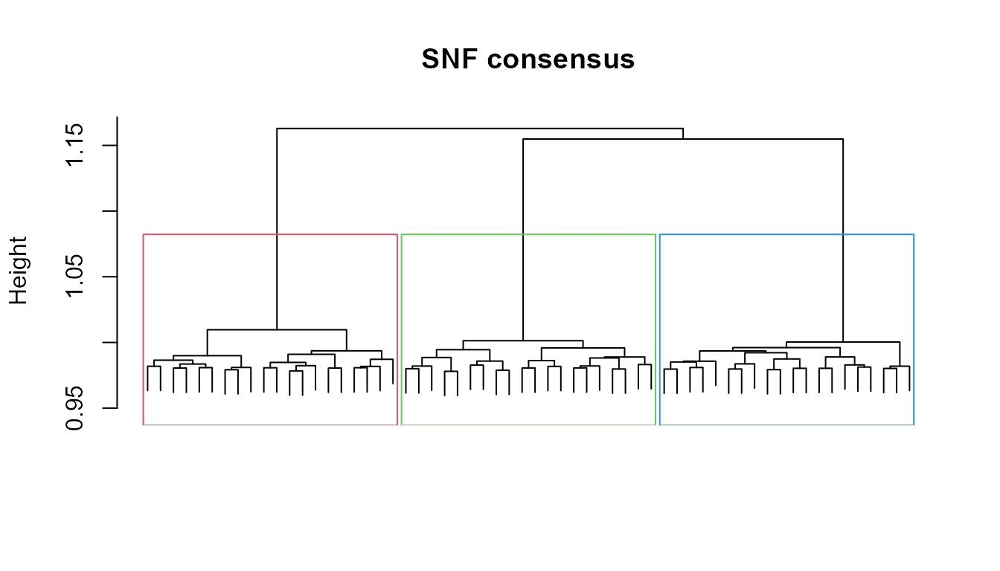

MosaiClusteR: an umbrella framework for multi-source and multi-omics clustering
Source:vignettes/MosaiClusteR.Rmd
MosaiClusteR.RmdWhat MosaiClusteR is for
Modern studies rarely describe their samples with a single table. A cohort may be profiled by several assays at once (transcriptomics, proteomics, metabolomics, methylation, microbiome), or a set of objects may be described by several heterogeneous data sources. MosaiClusteR is a framework for discovering the sample structure that these sources agree on: it takes a collection of data matrices measured over the same objects and returns an integrated clustering.
The package is deliberately a catalogue, not a single algorithm. Multi-source clustering can be approached in many ways, and no one method is best across all data regimes, so MosaiClusteR gathers a broad set of methods behind one consistent interface and adds everything you need to choose between them: preprocessing, cluster-number selection, agreement metrics, visual comparison, cluster characterisation, and, for omics, pathway and gene-set interpretation.
The multi-source integration methods are organised into five paradigms:
| Paradigm | Idea | Examples in this package |
|---|---|---|
| Direct | Concatenate the sources, cluster once |
ADC, ADEC
|
| Similarity-based | Combine per-source object similarities |
WeightedClust, WonM, SNF,
NEMO
|
| Graph-based | Partition a graph built from many clusterings |
EnsembleClustering, HBGF,
ClusteringAggregation
|
| Voting / consensus | Let many partitions vote on co-membership |
CEC, CVAA,
ConsensusClustering, EvidenceAccumulation,
LinkBasedClustering, the ABC family |
| Hierarchy-based | Merge per-source hierarchies |
HierarchicalEnsembleClustering, EHC
|
Alongside the five integration paradigms, the package also includes
methods that cluster a shared latent representation: intNMF
(joint non-negative matrix factorisation, a multi-source method), and
the related spectral_clustering (single-affinity) and
LUCID (supervised, outcome-guided) functions.
The data model
Every method in MosaiClusteR speaks the same language.
-
Input is a
Listof numeric matrices, one per source, all measured over the same objects in the same order. The convention is objects in rows, features in columns (nobjects xm_kfeatures for sourcek). Sources may have different numbers of features; they only need to share the objects. -
Output is a small list with two standard
components:
DistM(an object-by-object dissimilarity,n x n) andClust(a fitted hierarchical clustering). Some methods additionally return a$clusterlabel vector. - Methods that work from a precomputed dissimilarity accept
type = "dist"; otherwisetype = "data"(the default) starts from the raw matrices.
Because the interface is uniform, swapping one method for another is a one-line change, and the evaluation / visualisation tools work with any of them.
The package ships a small toy data set (two sources over 60 shared objects with three planted groups) used throughout this vignette.
data(mosaic_toy)
L <- mosaic_toy$List # a list of two matrices, objects in rows
truth <- mosaic_toy$truth # the known group of each object (for illustration)
S <- length(L) # number of sources
K <- 3 # number of groups
vapply(L, dim, integer(2)) # 60 objects x (120, 150) features
#> source1 source2
#> [1,] 60 60
#> [2,] 120 150You can also simulate structured multi-source data with
mosaic_sim():
sim <- mosaic_sim(n = 90, g = 3, seed = 1) # n objects, g groups
str(sim$List, max.level = 1)A first end-to-end analysis
A typical analysis moves through four layers: preprocess -> baseline -> integrate -> evaluate.
Layer 1 - Preprocess
Make heterogeneous sources comparable and turn a source into a dissimilarity.
# Make heterogeneous sources comparable, then compute distances from the
# normalised data. Distance() can also normalise internally via `normalize=`
# (for distmeasure = "euclidean"), which gives the same result.
Xn <- Normalization(L[[1]], method = "Quantile")
D1 <- Distance(Xn, distmeasure = "euclidean") # distances from normalised data
round(as.matrix(D1)[1:4, 1:4], 2)
#> obj01 obj02 obj03 obj04
#> obj01 0.00 13.83 14.03 13.74
#> obj02 13.83 0.00 14.78 13.88
#> obj03 14.03 14.78 0.00 14.30
#> obj04 13.74 13.88 14.30 0.00Distance() supports many measures, including
"euclidean", "manhattan",
"tanimoto"/"jaccard" (for binary
fingerprints), and correlation-based distances, and
Normalization() offers quantile, standardisation and range
scaling. Binary sources (e.g. molecular fingerprints, presence/absence)
are handled by choosing an appropriate distmeasure.
Layer 2 - Single-source baselines
Cluster each source on its own to see what it recovers in isolation. Weak or disagreeing baselines are exactly what motivates integration.
b1 <- Cluster(L[[1]], distmeasure = "euclidean", normalize = FALSE)
b2 <- Cluster(L[[2]], distmeasure = "euclidean", normalize = FALSE)
# the cluster count is chosen when labels are extracted, with mosaic_labels()
c(source1 = cluster_agreement(mosaic_labels(b1, 3), truth)[["ARI"]],
source2 = cluster_agreement(mosaic_labels(b2, 3), truth)[["ARI"]])
#> source1 source2
#> 1 1Layer 3 - Integrate, and Layer 4 - Evaluate
The whole point of the uniform interface is that you can run
many integration methods with almost identical calls and score
them the same way. Here we run one method from each paradigm and compare
how well each recovers the planted groups with the Adjusted Rand Index
(cluster_agreement() also returns NMI, Jaccard and purity).
mosaic_labels(fit, k) cuts any fitted result into
k clusters.
DM <- rep("euclidean", S); NM <- rep(FALSE, S); ME <- rep(list(NULL), S)
methods <- list(
"ADC (direct)" = function() mosaic_labels(
ADC(L, distmeasure = "euclidean", normalize = FALSE), K),
"WeightedClust (simil.)" = function() mosaic_labels(
WeightedClust(L, type = "data", distmeasure = DM, normalize = NM,
method = ME, weight = seq(1, 0, -0.25)), K),
"WonM (similarity)" = function() mosaic_labels(
WonM(L, type = "data", distmeasure = DM, normalize = NM, method = ME,
nrclusters = rep(list(2:6), S), linkage = rep("ward", S)), K),
"SNF (graph fusion)" = function() mosaic_labels(
SNF(L, type = "data", distmeasure = DM, normalize = NM, method = ME,
NN = 20, T = 20), K),
"NEMO (neighbourhood)" = function() NEMO(L, k = K, NN = 20)$cluster,
"CEC (consensus)" = function() mosaic_labels(
CEC(L, distmeasure = DM, normalize = NM, method = ME,
r = vapply(L, ncol, 1L) %/% 2L, nrclusters = as.list(rep(K, S)),
linkage = rep("ward", S)), K),
"intNMF (factor)" = function() intNMF(L, k = K, nstart = 4)$cluster,
"Data nuggets" = function() nugget_cluster(
do.call(cbind, L), k = K, max_nuggets = 40)$cluster,
"ABC (voting)" = function() mosaic_labels(
M_ABC(L, numsim = 60, NC = K), K)
)
# Run each method, recording success/failure, runtime and a useful message.
run_one <- function(name, f) {
t0 <- proc.time()[["elapsed"]]
res <- tryCatch(
data.frame(method = name, status = "ok",
ARI = round(cluster_agreement(f(), truth)[["ARI"]], 2),
message = "", stringsAsFactors = FALSE),
error = function(e)
data.frame(method = name, status = "failed", ARI = NA_real_,
message = conditionMessage(e), stringsAsFactors = FALSE))
res$seconds <- round(proc.time()[["elapsed"]] - t0, 2)
res[c("method", "status", "ARI", "seconds", "message")]
}
comparison <- do.call(rbind, Map(run_one, names(methods), methods))
comparison <- comparison[order(-comparison$ARI, na.last = TRUE), ]
rownames(comparison) <- NULL
comparison
#> method status ARI seconds message
#> 1 ADC (direct) ok 1.00 0.02
#> 2 WeightedClust (simil.) ok 1.00 0.01
#> 3 SNF (graph fusion) ok 1.00 0.05
#> 4 NEMO (neighbourhood) ok 1.00 0.03
#> 5 CEC (consensus) ok 1.00 0.04
#> 6 intNMF (factor) ok 1.00 0.10
#> 7 Data nuggets ok 1.00 0.01
#> 8 ABC (voting) ok 1.00 0.08
#> 9 WonM (similarity) ok 0.95 0.02On this toy set most methods recover the planted structure; on real data they diverge, which is why running several and comparing them is the recommended workflow rather than trusting a single algorithm.
The method catalogue
This section describes each integration method, grouped by paradigm.
All take the same List input; the calls below are complete
and ready to adapt.
Direct integration
The sources are combined into one representation and clustered once.
-
ADC: Aggregated Data Clustering: concatenate the sources (after optional per-source normalisation), form a single distance and one hierarchy. -
ADEC: Aggregated Data Ensemble Clustering: repeatedly subsample / reduce the concatenated data and aggregate the resulting partitions.
Similarity-based integration
Each source contributes an object-by-object similarity; the similarities are combined before clustering.
-
WeightedClust: convex (weighted) combination of per-source distances over a grid of weights; good when you want to control each source’s influence. -
WonM: Weighting on Membership: consensus co-membership accumulated over many cut heights, so no singlekhas to be fixed up front. -
SNF: Similarity Network Fusion: iteratively cross-diffuses per-source similarity networks into a single fused network (needsSNFtool). -
NEMO: NEighborhood based Multi-Omics clustering: averages neighbourhood affinities across sources and tolerates partially missing samples.
WeightedClust(L, type = "data", distmeasure = DM, normalize = NM, method = ME,
weight = seq(1, 0, -0.25))
WonM(L, type = "data", distmeasure = DM, normalize = NM, method = ME,
nrclusters = rep(list(2:6), S), linkage = rep("ward", S))
SNF(L, type = "data", distmeasure = DM, normalize = NM, method = ME, NN = 20, T = 20)
NEMO(L, k = K, NN = 20)$clusterGraph-based integration
Many base clusterings are encoded as a graph (of objects and/or clusters) that is then partitioned.
-
EnsembleClustering: CSPA / HGPA / MCLA hyper-graph consensus. -
HBGF: Hybrid Bipartite Graph Formulation over objects and clusters. -
ClusteringAggregation: aggregate many partitions by a distance between clusterings.
HBGF(L, type = "data", distmeasure = DM, normalize = NM, method = ME, nrclusters = 3)
ClusteringAggregation(L, type = "data", distmeasure = DM, normalize = NM,
method = ME, nrclusters = 3)
# EnsembleClustering() / EHC() call an external graph-partitioning executable
# (e.g. METIS); install it and pass its path via 'executable' to use them.Voting / consensus integration
Many partitions “vote” on whether each pair of objects belongs together; a consensus co-membership is then clustered.
-
CEC: (Consensus) Ensemble Clustering by incidence accumulation across sources and cut points; weight-aware. -
CVAA: Cumulative Voting Adjusted Aggregation, aligning partitions to a reference before merging. -
ConsensusClustering: iterative (probabilistic) voting consensus. -
EvidenceAccumulation: co-association matrix across partitions. -
LinkBasedClustering: refines the co-association with link-based similarity (CTS / SRS / ASRS). -
The ABC family:
M_ABC,M_ABCdistand the deep-learning variantM_ABCdeepbuild a consensus by repeatedly bootstrapping objects and feature bundles per source;M_ABCdist.WCfuses per-source distances with an optimally weighted combination.
CEC(L, distmeasure = DM, normalize = NM, method = ME,
r = vapply(L, ncol, 1L) %/% 2L, nrclusters = as.list(rep(K, S)),
linkage = rep("ward", S))
ConsensusClustering(L, type = "data", distmeasure = DM, normalize = NM,
method = ME, nrclusters = 3)
EvidenceAccumulation(L, type = "data", distmeasure = DM, normalize = NM,
method = ME, nrclusters = 3)
LinkBasedClustering(L, type = "data", distmeasure = DM, normalize = NM,
method = ME, nrclusters = 3, linkBasedMethod = "SRS")
M_ABC(L, numsim = 200, NC = 3) # co-clustering consensus
M_ABCdist(L, numsim = 200, NC = 3) # distance-accumulating variant
M_ABCdeep(L, numsim = 200, NC = 3, ae_epochs = 60) # autoencoder embeddingHierarchy-based integration
Per-source hierarchies are merged into a single dendrogram.
-
HierarchicalEnsembleClustering: combine per-source hierarchical clusterings into a consensus hierarchy. -
EHC: Ensemble Hierarchical Clustering (uses an external partitioner).
HierarchicalEnsembleClustering(L, type = "data", distmeasure = DM,
normalize = NM, method = ME)Factor, low-rank and spectral methods
Cluster a shared latent representation of the sources.
-
intNMF: integrative non-negative matrix factorisation: a shared basis plus per-source coefficients; cluster the shared factors. -
spectral_clustering: spectral clustering of an affinity matrix (build one from a fused similarity, e.g. viaSimilarityMeasure()orSNF()). -
LUCID: a wrapper for latent-cluster models that use an outcome (supervised integration); supply exposuresG, omicsZand outcomeY.
Feature weighting and data nuggets
Not all features are equally informative. Several methods can weight
features by their importance, and MosaiClusteR provides a stable,
big-data-friendly weighting based on data nuggets: a
compression of the objects into weighted representatives that resists
outliers and scales to large n.
dn <- create_data_nuggets(L[[1]], max_nuggets = 25) # compress objects
dn
#> <data_nugget>
#> engine : native
#> observations: 60 compressed into 25 nuggets
#> reduction : 58.3%
#> weight range: 1 - 5 (obs per nugget)
w <- nugget_feature_weights(dn, type = "between") # feature importance
head(sort(w, decreasing = TRUE))
#> src1_f008 src1_f004 src1_f012 src1_f006 src1_f019 src1_f003
#> 2.449098 2.352650 2.284118 2.165043 2.103505 2.007162Data nuggets can also be clustered directly, and used as the feature
weighting in the ABC family (weighting = "nugget"):
Choosing the number of clusters
SelectnrClusters() scores a range of k
(silhouette / gap-style criteria) so you do not have to guess.
ChooseCluster() helps pick a cut of a fitted tree.
sel <- SelectnrClusters(L, type = "data", distmeasure = DM, normalize = NM,
method = ME, nrclusters = 2:6)
sel$Optimal_Nr_of_CLusters # one recommendation per criterion
#> Nr Clusters for Data 1 Nr Clusters for Data 2 Optimal nr of clusters
#> NrClusters 3 3 3
# $Optimal_Nr_of_CLusters is a one-row data frame (one column per criterion);
# reduce it to a single integer by taking the most frequent recommendation.
recs <- as.integer(unlist(sel$Optimal_Nr_of_CLusters))
k_hat <- as.integer(names(sort(table(recs), decreasing = TRUE))[1])
k_hat
#> [1] 3Evaluating and comparing clusterings
| Function | Purpose |
|---|---|
cluster_agreement(a, b) |
ARI, NMI, Jaccard, purity between two labellings |
compare_clusterings(D1, D2, NC) |
agreement between two integrated results |
mosaic_labels(fit, k) |
cut any fitted result into k labels |
CompareSilCluster, CompareSvsM
|
silhouette-based comparison of solutions |
DetermineWeight_SilClust,
DetermineWeight_SimClust
|
data-driven source weights |
fit_a <- ADC(L, distmeasure = "euclidean", normalize = FALSE)
fit_b <- SNF(L, type = "data", distmeasure = DM, normalize = NM, method = ME)
compare_clusterings(fit_a$DistM, fit_b$DistM, NC = 3)$ARI
#> NC = 3, linkage = ward.D2, n = 60
#> Adjusted Rand Index : 1.0000
#> Normalized Mut. Info: 1.0000
#> Pair-Jaccard (same) : 1.0000
#> D2_c1 D2_c2 D2_c3
#> D1_c1 20 0 0
#> D1_c2 0 20 0
#> D1_c3 0 0 20
#> ARI
#> 1
cluster_agreement(mosaic_labels(fit_b, 3), truth)
#> ARI NMI Jaccard
#> 1 1 1Visualising results
MosaiClusteR includes a plotting suite for inspecting and comparing solutions. A fitted result carries a hierarchy you can draw directly:
fit <- SNF(L, type = "data", distmeasure = DM, normalize = NM, method = ME)
hc <- stats::as.hclust(fit$Clust)
plot(hc, labels = FALSE, main = "SNF consensus", xlab = "", sub = "")
stats::rect.hclust(hc, k = 3, border = 2:4)
Other visualisations (all take fitted results or label vectors):
| Function | Shows |
|---|---|
ComparePlot |
several solutions aligned side-by-side (needs circlize,
plotrix) |
ClusterPlot, Cyclogram
|
a single solution as a coloured tree / cyclogram |
SimilarityHeatmap, HeatmapPlot
|
object-by-object similarity / feature heatmaps |
ProfilePlot, ContFeaturesPlot,
BinFeaturesPlot_*
|
per-cluster feature profiles |
BoxPlotDistance |
within- vs between-cluster distances |
ColorPalette, ColorsNames,
ClusterCols, LabelCols
|
consistent colour helpers |
ComparePlot(list("ADC" = fit_a, "SNF" = fit_b), nrclusters = 3)
SimilarityHeatmap(fit_b$DistM)
ProfilePlot(L[[1]], mosaic_labels(fit_b, 3))Characterising and tracking clusters
Once you have clusters, describe why they differ and follow them across solutions.
| Function | Purpose |
|---|---|
CharacteristicFeatures, FeatSelection
|
features that define each cluster |
FeaturesOfCluster |
the driving features of one cluster |
FindCluster, FindElement
|
locate a cluster / object in a result |
TrackCluster |
follow a cluster across several solutions |
ReorderToReference |
align labels of one solution to a reference (Gale-Shapley) |
SharedComps, SimilarityMeasure
|
shared members / similarity between solutions |
CharacteristicFeatures(L, mosaic_labels(fit_b, 3))
ReorderToReference(reference = truth, tocompare = mosaic_labels(fit_a, 3))Biological interpretation (omics)
For omics data, MosaiClusteR connects clusters to genes and pathways.
These functions rely on Bioconductor packages (limma,
MLP, biomaRt, org.Hs.eg.db, …),
declared under Suggests; install them to enable this layer. All
examples here are illustrative.
| Function | Purpose |
|---|---|
DiffGenes, DiffGenesSelection,
FindGenes
|
differential features per cluster |
PathwayAnalysis, Pathways,
PathwaysIter, PathwaysSelection
|
pathway enrichment per cluster |
PreparePathway, PlotPathways
|
prepare / visualise pathway results |
Geneset.intersect, SharedGenesPathsFeat,
SharedSelection*
|
shared genes / pathways across solutions |
dg <- DiffGenes(L, mosaic_labels(fit_b, 3), geneexpr = L[[1]])
pa <- PathwayAnalysis(L, mosaic_labels(fit_b, 3), geneexpr = L[[1]])
PlotPathways(pa)Putting it together
A complete, reproducible analysis is short because every step shares the interface:
L <- my_sources # list of matrices, objects in rows
sel <- SelectnrClusters(L, type = "data", distmeasure = rep("euclidean", length(L)),
normalize = rep(FALSE, length(L)),
method = rep(list(NULL), length(L)),
nrclusters = 2:8)
# reduce the per-criterion recommendations to a single integer k
recs <- as.integer(unlist(sel$Optimal_Nr_of_CLusters))
k <- as.integer(names(sort(table(recs), decreasing = TRUE))[1])
fit <- SNF(L, type = "data", distmeasure = rep("euclidean", length(L)),
normalize = rep(FALSE, length(L)), method = rep(list(NULL), length(L)))
lab <- mosaic_labels(fit, k)
CharacteristicFeatures(L, lab) # what defines the clustersSwap SNF for any other method above to compare paradigms
on your own data.
#> R version 4.6.0 (2026-04-24 ucrt)
#> Platform: x86_64-w64-mingw32/x64
#> Running under: Windows 11 x64 (build 26300)
#>
#> Matrix products: default
#> LAPACK version 3.12.1
#>
#> locale:
#> [1] LC_COLLATE=English_United Kingdom.utf8
#> [2] LC_CTYPE=English_United Kingdom.utf8
#> [3] LC_MONETARY=English_United Kingdom.utf8
#> [4] LC_NUMERIC=C
#> [5] LC_TIME=English_United Kingdom.utf8
#>
#> time zone: Europe/Paris
#> tzcode source: internal
#>
#> attached base packages:
#> [1] stats graphics grDevices utils datasets methods base
#>
#> other attached packages:
#> [1] MosaiClusteR_1.0.0.9000
#>
#> loaded via a namespace (and not attached):
#> [1] cli_3.6.6 knitr_1.51 rlang_1.2.0 xfun_0.57
#> [5] otel_0.2.0 textshaping_1.0.5 gtools_3.9.5 jsonlite_2.0.0
#> [9] htmltools_0.5.9 fastcluster_1.3.0 ragg_1.5.2 sass_0.4.10
#> [13] rmarkdown_2.31 evaluate_1.0.5 jquerylib_0.1.4 fastmap_1.2.0
#> [17] prettyGraphs_2.2.0 SNFtool_2.3.1 yaml_2.3.12 lifecycle_1.0.5
#> [21] alluvial_0.1-2 cluster_2.1.8.2 compiler_4.6.0 ExPosition_2.11.0
#> [25] fs_2.1.0 htmlwidgets_1.6.4 Rcpp_1.1.1-1.1 systemfonts_1.3.2
#> [29] digest_0.6.39 R6_2.6.1 Rdpack_2.6.6 rbibutils_2.4.1
#> [33] bslib_0.11.0 tools_4.6.0 matrixStats_1.5.0 pkgdown_2.2.1
#> [37] cachem_1.1.0 desc_1.4.3